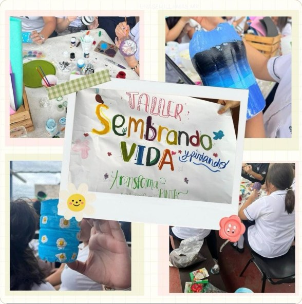
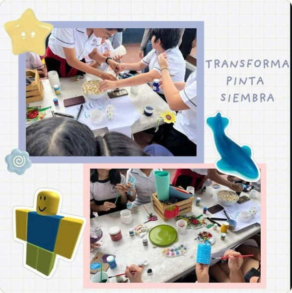

Quiénes somos
Estudiantes apasionados por el cuidado ambiental
Somos estudiantes a quienes les gustan los temas ambientales y queremos convertir esa curiosidad en acciones cotidianas. Nos interesa aprender sobre el agua, el suelo, la energía y la biodiversidad, y compartir lo que descubrimos con nuestra comunidad.
Queremos que ATLIA sea un espacio cercano, inclusivo y práctico: donde podamos preguntar, investigar, crear materiales útiles y organizar actividades que nos ayuden a cuidar mejor nuestro entorno.
Nuestro taller
Sembrando vida y pintando
Transformamos envases reciclados en macetas pintadas a mano y sembramos semillas para darles una nueva vida. Transforma, pinta, siembra.

